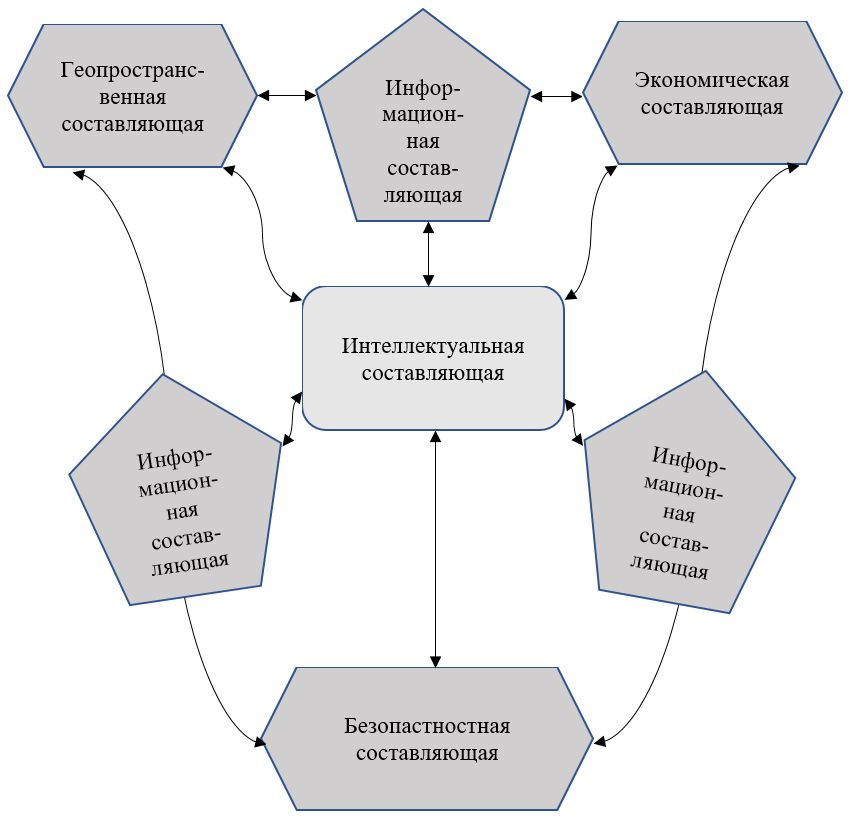
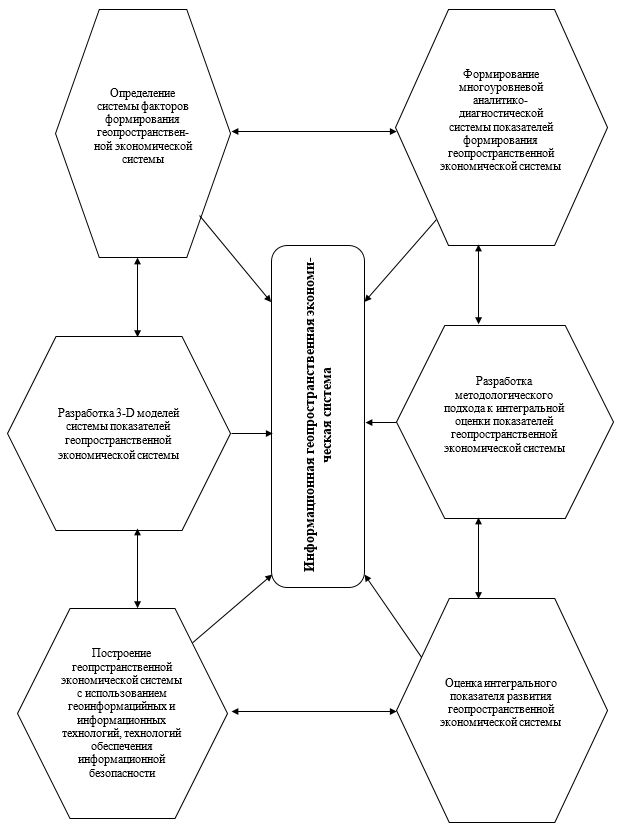

Интеллектуальная геопространственная экономическая система развития территории
В современных условиях нарастания кризисных явлений, негативного влияния внешних и внутренних факторов, пандемии COVID - 19 стагнационных процессах, наблюдаемых в экономике, особое значение имеет применение современных инструментов и подходов, которые обеспечивают ее развитие. В этом контексте особое значение имеет разработка и внедрение информационных систем и технологий, инструментария интеллектуальной геопространственной экономики, как нового направления, которое базируется на положениях и подходах теории экономического развития, использования технологий формирования интеллекта и инструментария информационных и геоинформационных систем.
Проблемные явления, которые проявляются во многих экономиках государств, формируют необходимость переосмысления
подходов к управлению
экономическими процессами на различных уровнях, особенно обеспечения дистанционной формы с использованием
информационных и геопространственных систем.
Синтез современных методов, моделей, систем позволяет построить интеллектуальную геопространственную экономику.
Кроме того, за последние годы
развитие интернет-технологий и цифровой экономики, интеллектуальных и геопространственных систем указывает на
необходимость формирования
и реализации интеллектуальной геопространственной экономики (intelectgeospates) на разных уровнях.
В начало...
Концепция базируется на теоретико-методологической платформой по определению интеллектуальной геопространственной
экономики как системы,
которая включает интеллектуальные, информационные, картографии, экономические и оборонные элементы, направленных
на обеспечение дистанционного
управления формированием и использованием всеми видами ресурсов на региональном, местном и
других уровнях, учитывая
особенности взаимодействия стейкхолдеров, влияния внешних и внутренних факторов, формирует цифровую
экономическую среду.
В начало...
Охарактеризованы элементы интеллектуальной геопространственной экономики:
интеллектуальный: формируются и используются системы развития интеллекта, которые выступают «двигателем» и «Мозговым центром» для определение количественных и качественных экономических параметров на различных уровня (государственном, региональном, местном и т.д.). Инструменты формирования и использования системы развития интеллекта состоят из:
- методов;
- моделей;
- параметров;
На интеллектуальном уровне осуществляется оценка экономических показателей, осуществляется их прогнозирования, определяются направления повышения эффективности формирования и использования всех видов ресурсов и взаимодействия стейкхолдеров, разработки стратегических контуров развития экономических систем на различных уровнях;
геопространственный: осуществляется геопространственный анализ экономических процессов с использованием геоинформационных систем и технологий, который позволяет определить направления и особенности использования всех видов ресурсов, учитывая пространственные особенности территорий и уровень взаимодействия стейкхолдеров. Для формирования геопространственного уровня используется инструментарий:
- геофакторного анализа;
- геоинформационные системы;
- геоинформационные технологии;
- Web геоинформационные системы.
экономический: формирует количественную основу экономических процессов путем разработки и использования аналитико-диагностической системы показателей, учитывая особенности информационно-аналитического и нормативно-правового обеспечения, взаимодействия стейкхолдеров. Для формирования экономического уровня используется инструментарий:
- экономического анализа;
- финансового анализа;
- стратегического анализа;
- экономико-математического моделирования;
- нейронного анализа;
- диагностически-аналитические системы;
- интегрального метода;
- нормативно-правового обеспечения;
- информационно-аналитического обеспечения.
На экономическом уровне разрабатывается аналитико-диагностическая система показателей (рис. 1.1).
Рис. 1.1 - Аналитико-диагностическая система показателей в интеллектуальной геопространственной экономике
На локальном уровне определяются локальные показатели с использованием экспертных и количественных методов оценки, учитывая уровень экономики, нормативно-правовое обеспечение, направления и особенности взаимодействия с стейкхолдерами. Локальные показатели формируются исходя из входных показателей, определяемых на основе нормативно-правового или существующего информационно-аналитического обеспечения, аналитическими методами или методами экспертного анализа.
Диагностика результатов оценки локальных показателей осуществляется на основе разработанных значений шкал показателей, установленных их нормативных значений. Шкалы разрабатываются и устанавливаются нормативные значения для каждого локального показателя.
На обобщающем уровне оцениваются обобщающие показатели, которые группируются на основе локальных показателей в зависимости от направлений и особенностей экономических отношений, развития территорий, геопространственного обеспечения, экологической и инвестиционной политики и др. На обобщающем уровне используются обобщающие модели и коэффициенты важности каждого показателя.
Диагностика результатов оценки обобщающих показателей осуществляется на основе разработанной шкалы и установленных нормативных значений.
На интегральном уровне определяется интегральный показатель развития геопространственной экономической системы с использованием интегральной модели и обобщающих показателей. На основе значений интегрального показателя оказываются диспропорции в системе и разрабатываются направления стратегического развития;
безопековий: направленный на формирование и использование информационной системы безопасности, которая позволяет осуществлять информационную, финансово-экономическую, корпоративную, стейкхолдерную, силовую безопасность. Этот элемент разрабатывается и реализуется путем использования инструментария:
- методы и модели информационной безопасности;
- инструментария финансово-экономической безопасности;
- методов и моделей корпоративной и силовой безопасности;
- обеспечения безопасности взаимодействия стейкхолдеров.
По безопасности элемент формируется из нескольких уровней, разрешается обеспечить многоуровневый контроль и безопасность.
Общая схема формирования интеллектуальной геопространственной экономики представлена на рис. 1.2.
Рис. 1.2 - Общая схема формирования интеллектуальной геопространственной экономики
Геопространственная составляющая формируется и реализуется на основе алгоритма разработки и работы баз геоданных показателей интеллектуальной геопространственной экономики:
Рис. 1.3 - Алгоритм разработки и работы баз геоданных показателей интеллектуальной геопространственной экономики
Алгоритм создания пространственной информации для моделирования и анализа данных показателей интеллектуальной геопространственной экономики представлен в виде совокупности взаимосвязанных операций по разработке и подготовке баз геоданных показателей в программной среде ГИС.
Система геоинформационного обеспечения показателей интеллектуальной геопространственной экономики с учетом входящих, локальных, обобщающих и интегральных данных реализуется по следующим составляющим:
- Применение программного обеспечения для разработки геоинформационной системы.
- Использование базы геоданных показателей интеллектуальной геопространственной экономики для создания набора слоев геоинформационной системы.
- Анализ обобщающих интегральных показателей интеллектуальной геопространственной экономики с учетом территориальных и законодательных характеристик.
- Выбор технологии оценки интегральных показателей интеллектуальной геопространственной экономики.
- Применение программного модуля ГИС и технологии математического моделирования показателей территориального развития интеллектуальной геопространственной экономики.
- Создание моделей процесса и анализа показателей интеллектуальной геопространственной экономики.
- Разработка набора слоев обобщающих показателей.
- Анализ и разработка слоя интегральных показателей интеллектуальной геопространственной экономики.
- Применение шкалы влияния данных моделирования показателей интеллектуальной геопространственной экономики.
- Визуализация данных, представление геоинформационной системы интеллектуальной геопространственной экономики.
Алгоритм реализации ГИС интеллектуальной геопространственной экономики представлены на рис 1.4.

Рис. 1.4 - Алгоритм реализации ГИС интеллектуальной геопространственной экономики
Примеры использования ГИС интеллектуальной геопространственной экономики на региональном уровне представлено на рис. 1.5 - 1.11.

Рис. 1.5 - Геоинформационная карта обобщающих пространственных показателей территориального развития использования земель регионов в системе интеллектуальной геопространственной экономики

Рис. 1.6 - Геоинформационная карта обобщающих градостроительных показателей территориального развития использования земель регионов в системе интеллектуальной геопространственной экономики

Рис. 1.7 - Геоинформационная карта обобщающих инвестиционных показателей территориального развития использования земель регионов в системе интеллектуальной геопространственной экономики

Рис. 1.8 - Геоинформационная карта обобщающих экологических показателей территориального развития использования земель регионов в системе интеллектуальной геопространственной экономики

Рис. 1.9 - Геоинформационная карта интегральных показателей территориального развития использования земель регионов в системе интеллектуальной геопространственной экономики

Рис. 1.10 - Геоинформационная 3-D модель мониторинга состояния территориального развития использования земель регионов в системе интеллектуальной геопространственной экономики
Рис. 1.11 - Геоинформационная 3-D модель мониторинга состояния и прогнозных тенденций территориального развития использования земель регионов в системе интеллектуальной геопространственной экономики
Информационной основой для формирования геопространственной составляющей является: землеустроительная документация, карты М: 500, 1000, 2000, 5000, данные по пространственным, экономическим, инвестиционным, экологическим, градостроительным, морским показателям;
информационный: формируется информационная платформа функционирования интеллектуальной геопространственной экономического системы, которая является ее «оболочкой» и связывает в единое целое элементы.
Общая схема технологии разработки информационного уровня интеллектуальной геопространственной экономической системы представлена на рис. 1.12.
Из общей схемы технологии разработки информационного уровня интеллектуальной геопространственной экономической системы реализуются основные этапы:
- определение системы факторов формирования геопространственной экономической системы на основе информационно-аналитического и нормативно-правового обеспечения в зависимости от уровня выполнения задачи (государство, регион, город, другие территориальные объединения или хозяйствующие субъекты)
- формирование многоуровневой аналитико-диагностической системы показателей формирования геопространственной экономической системы на основе определенной системы факторов, фундаментальных и прикладных разработок три уровня: локальный, обобщающий и интегральный. Каждому уровню соответствуют показатели, которые формируют иерархическую систему;
- разработка методологического подхода к интегральной оценки показателей геопространственной экономической системы, который включает совокупность взаимосвязанных этапов (рис. 1.13);
- оценка интегрального показателя развития геопространственной экономической системы осуществляется на основе использование методологического подхода. При этом методы, модели оценки разрабатываются и используются в экономическом блоке в соответствии с показателями определенных в лечебно-аналитической системе;
- построение геопрстранственной экономической системы с использованием геоинформационных и информационных технологий, технологий обеспечения информационной безопасности. Кроме того, используется программное обеспечения по использованию полученных данных в информационной системе, формирование баз.

Рис. 1.12 - Общая схема технологии разработки информационного уровня интеллектуальной геопространственной экономической системы данных, их прогнозирования, развития искусственного интеллекта, геоинформационных систем, систем информационной безопасности;

Рис. 1.13 - разработка методологического подхода к интегральной оценки показателей геопространственной экономической системы.
В начало...
На основі використання представленої технології розробляються заходи щодо підвищення ефективності і результативності, забезпечення розвитку системи, визначення і реалізації стратегічних контурів розвитку системи.
Для розробки інформаційної складової використовується інструментарій: програмного забезпечення (С ++, Python), штучного інтелекту, програмного забезпечення щодо формування інформаційної безпеки.
Для реалізації інформаційної складової розробляється апаратно-інформаційна модель геопросторової економічної системи.
Використовується апаратно-інформаційна модель в сфері економічних відносин для визначення рівня геопространственного розвитку на різних рівнях економіки (державному, регіональному, інших террторіальних об'єднань, підприємств), його прогнозування та забезпечення підвищення в сучасних умовах розвитку і функціонування економічекіх суб'єктів і взаємодії стейкхолдерів.
Суть апаратно-інформаційної моделі полягає в застосуванні технології визначення рівня геопростанственного розвитку на різних рівнях розвитку економічних відносин на основі використання інформаційно і геоінформаційного апарату, багаторівневої аналітично-діагностичної системи показників, напрямків і результатів інтегральної оцінки, технологій штучного інтелекту та інформаційної безпеки.
Поставлена задача досягається тим, що в розробці і застосуванні апаратно-інформаційної моделі визначення рівня геопростанственного розвитку на різних рівнях розвитку економічних відносин на основі сукупності технічних процедур і технології, що враховують взаємодію інформаційної, геопростанственной, економічної, інтелектуальної та безпекової складових, враховуючи особливості та напрямки взаємодії стейкхолдерів.
Результати застосування апаратно-інформаційної моделі: дозволяє побудувати інформаційну систему інтелектуальної геопросторової економіки на різних її рівнях, реалізується із застосуванням спеціальних інформаційно-розрахункових і геопростанственних комплексів і зберігається на інформаційних носіях і інформаційному середовищі.
В основу корисної апаратно-інформаційної моделі поставлена задача - розробка технології визначення рівня розвитку інтелектуальної геопросторової економіки на різних її рівнях на основі застосування комплексу взаємопов'язаних інформаційних модулів і апаратних комплексів. Представлена апаратно-інформаційна модель дозволяє сформувати інформаційну базу за рівнем розвитку інтелектуальної геопросторової економіки на різних її рівнях для прийняття рішень і зростання ефективності основних напрямків, враховуючи особливості взаємодії стейкхолдерів. Апаратно-інформаційна молінь дозволяється дистанційно керувати економічними відносинами, всіма видами ресурсів на разлічниз рівнях.
Апаратно-інформаційна модель визначення рівня розвитку інтелектуальної геопросторової економіки на різних її рівнях включає наступні модулі і блоки (мал. 1.14):
- Вхідний модуль збору інформації про чинники, які формують інформаційне забезпечення рівня розвитку інтелектуальної геопросторової економіки на відповідному рівні (М1).
- Апаратний модуль зберігання інформації про фактори рівня розвитку інтелектуальної геопросторової економіки на відповідному рівні на інформаційних носіях (М2).
- Апаратний блок відбору факторів за певними критерію (Б1).
- Інформаційний модуль побудови багаторівневої системи чинників, що формують інформаційне забезпечення рівня розвитку інтелектуальної геопросторової економіки на відповідному рівні М3).
- Апаратний блок формування ієрархічної багаторівневої системи факторів (Б2) із застосуванням методу класифікації ієрархій та визначення можливостей реагування на зміни, що відбуваються в системі і технологій штучного інтелекту.
- Апаратний модуль зберігання інформації про багаторівневої системи на інформаційних носіях (М4).
- Комплекс представлених модулів і блоків формують перший рівень апаратно-інформаційної моделі та систему інформаційної безпеки (Р1).
- Апаратний модуль переходу від факторів до показників на основі квазіметріческіх моделей (М5).
- Інформаційний модуль формування багаторівневої аналітико-діагностичної системи показників рівня розвитку інтелектуальної геопросторової економіки на відповідному рівні (М6).
- Апаратний блок визначення показників рівня розвитку інтелектуальної геопросторової економіки на відповідному рівні за певними методами і моделями на третьому рівні системи (Б3) з використанням технологій штучного інтелекту.
- Апаратний блок визначення показників рівня розвитку інтелектуальної геопросторової економіки на відповідному рівні за певними методами і моделями на другому рівні системи (Б4) з використанням технологій штучного інтелекту.
- Апаратний блок визначення показників рівня розвитку інтелектуальної геопросторової економіки на відповідному рівні за відповідними методами і моделями на першому рівні системи (Б5) з використанням технологій штучного інтелекту.
- Апаратний модуль зберігання інформації за певними показниками багаторівневої діагностично-аналітичної системи на інформаційних носіях (M7).
- Апаратний блок визначення інтегрального показника рівня розвитку інтелектуальної геопросторової економіки на відповідному рівні з використанням відповідних методів і моделей і технологій штучного інтелекту (Б6).
- Апаратний модуль зберігання інформації за певним інтегрального показника багаторівневої діагностично-аналітичної системи на інформаційних носіях (M8).
- Комплекс представлених модулів і блоків формують другий рівень апаратно-інформаційної моделі та систему інформаційної безпеки (Р22).
- Апаратний модуль відмови від реалізації проектних рішень щодо розвитку інтелектуальної геопросторової економіки на відповідних рівнях (M9) з використанням технології штучного інтелекту і побудованої шкали показників.
- Інформаційний модуль прийняття проектних рішень за інтегральним показником і побудованої шкалою (M10) з використанням технології штучного інтелекту і побудованої шкали показників.
- Апаратний модуль реалізації проектних рішень щодо розвитку інтелектуальної геопросторової економіки на відповідних рівнях (M11) з використанням технології штучного інтелекту.
- Комплекс представлених модулів і блоків формують третій рівень апаратно-інформаційної моделі та систему інформаційної безпеки (Р3).
- Апаратний блок прогнозування інтегрального показника рівня розвитку інтелектуальної геопросторової економіки на відповідному рівні з використанням відповідних методів і моделей і технологій штучного інтелекту (Б7).
- Апаратний модуль зберігання інформації по спрогнозувати інтегральним показником багаторівневої діагностично-аналітичної системи на інформаційних носіях (M12).
- Апаратний модуль реалізації проектних рішень щодо розвитку інтелектуальної геопросторової економіки на відповідних рівнях на прогнозних значеннях (M13) з використанням технології штучного інтелекту.
- Комплекс представлених модулів і блоків формують четвертий рівень апаратно-інформаційної моделі та систему інформаційної безпеки (P4).
- Апаратний модуль простроенной геоінформаційних карт входять і локальних показників розвитку інтелектуальної геопросторової економіки на відповідних рівнях (M14) з використанням геоінформаційних систем і технологій.
- Апаратний модуль простроенной геоінформаційних карт узагальнюючих показників розвитку інтелектуальної геопросторової економіки на відповідних рівнях (M15) з використанням геоінформаційних систем і технологій.
- Апаратний модуль простроенной геоінформаційних карт інтегрального показника рівня розвитку інтелектуальної геопросторової економіки на відповідних рівнях (M16) з використанням геоінформаційних систем і технологій.
- Апаратний модуль побудованим 3-D геоінформаційних моніторингових карт прогнозного інтегрального показника рівня розвитку інтелектуальної геопросторової економіки на відповідних рівнях (M17) з використанням геоінформаційних систем і технологій.
- Апаратний модуль зберігання інформації по геоінформаційному забезпечення інтелектуальної геопросторової економіки (M18).
- Апаратний модуль реалізації стратегічних проектних рішень щодо розвитку інтелектуальної геопросторової економіки на відповідних рівнях з урахуванням просторового забезпечення (M19) з використанням технології штучного інтелекту.
- Комплекс представлених модулів і блоків формують п'ятий рівень апаратно-інформаційної моделі та систему інформаційної безпеки (P5).

Мал. 1.14 - Апаратно-інформаційна модель рівня розвитку інтелектуальної геопросторової економіки на відповідному рівні
Апаратно-інформаційна модель рівня розвитку інтелектуальної геопросторової економіки на відповідному рівні реалізується в такий спосіб:
- На основі збору інформації про чинники (M1), з огляду на економічні, технологічні, стейкхолдерні, просторові, інвестиційні, містобудівні, екологічні та інші особливості, ознаки земель через апаратні засоби зберігання інформації (M2) і відбору факторів (Б1), формується система факторів, що впливають на рівень розвитку інтелектуальної геопросторової економіки на відповідному рівні (M3). Для відбору чинників використовується технологія штучного інтелекту. На основі сформованої системи формується багаторівнева система факторів (Б2), що включає три рівня факторів. Якщо побудована багаторівнева система факторів за встановленими критеріями, то здійснюється збереження інформації апаратними засобами (M4). Якщо "Ні", то знову повертаємося до оновлення інформації про фактори рівня розвитку інтелектуальної геопросторової економіки, їх відповідності сучасним умовам. Представлена група модулів і блоків формують перший рівень апаратно-інформаційної моделі рівня розвитку інтелектуальної геопросторової економіки на певному рівні, будується інформаційний захист від зовнішнього і внутрішнього впливу (Р1).
- Перехід від першого рівня моделі до іншої здійснюється через апаратний модуль трансформації факторів з показниками на основі квазіметрічніх моделей (M5). На основі проведеного переходу, побудовано інформаційний модуль формування багаторівневої системи показників рівня розвитку інтелектуальної геопросторової економіки на певному рівні (M6), в рамках якої визначаються відповідні показники на третьому (Б3), другому (Б4), першому (Б5) рівнях системи і використанням технології штучного інтелекту. Результати оцінки показників зберігаються на апаратних засобах (інформаційних носіях) модуля зберігання інформації (M7). Потім в апаратній блоці визначаються інтегральний показник рівня розвитку інтелектуальної геопросторової економіки на певному рівні за відповідними методами і моделями (Б6), результати якого на інформаційних носіях в апаратній блоці (M8). Слід зазначити певний на попередньому блоці інтегральний показник по побудованої шкалою відповідності автоматично перевіряється рівень відповідності з прийняття та реалізації рішень по рівню розвитку інтелектуальної геопросторової економіки на відповідному рівнем. Якщо інтегральний показник більше або дорівнює 5 (I ³ 5), то здійснюється перехід на третій рівень апаратно-інформаційної моделі визначення інвестиційної привабливості земель регіону. Якщо "Ні", то на третьому рівні моделі реалізується апаратний модуль відмови від реалізації проектних рішень щодо забезпечення розвитку інтелектуальної геопросторової економіки (M9). При цьому використовується технологія штучного інтелекту, економічні методи і моделі, формується система інформаційної безпеки другого рівня (P2).
- На третьому рівні (P3) моделі реалізується інформаційний модуль прийняття проектних рішень за інтегральним показником і побудованої шкалою (M10) і здійснюється перехід до апаратного модуля реалізації проектних рішень щодо забезпечення розвитку інтелектуальної геопросторової економіки (M11). Формується третій рівень і система безпеки. Формування та прийняття рішень здійснюється на основі використання технології штучного інтелекту.
- На четвертому рівні (P4) здійснюється прогнозування інтегрального показника рівня розвитку інтелектуальної геопросторової економіки на відповідному рівні з використанням відповідних математичних методів і моделей, нейронного моделювання і технологій штучного інтелекту (Б7). Отримані результати зберігаються на інформаційних носіях (M12). На основі отриманих значень здійснюється реалізація проектних рішень щодо розвитку інтелектуальної геопросторової економіки на відповідних рівнях (M13) з використанням технології штучного інтелекту. Формуються стратегічні контури і напрямки розвитку економіки. Здійснюється побудова системи інформаційної безпеки.
- На п'ятому рівні (P4) здійснюється побудова геоінформаційних карт за показниками розвитку інтелектуальної геопросторової економіки на відповідних рівнях (M14), (M15), (M16) з використанням геоінформаційних систем і технологій. Здійснюється побудованим 3-D геоінформаційних моніторингових карт прогнозного інтегрального показника рівня розвитку інтелектуальної геопросторової економіки на відповідних рівнях (M17). Представлена інформація зберігається на інформаційних носіях (M18). З урахуванням просторового забезпечення здійснюється реалізація стратегічних проектних рішень щодо розвитку інтелектуальної геопросторової економіки на відповідних рівнях (M19М19) з використанням технології штучного інтелекту.
Таким чином, апаратно-інформаційна модель рівня розвитку інтелектуальної геопросторової економіки на відповідному рівні відображає системне інформаційне забезпечення економічних процесів і відносин для зростання їх ефективності, формування та використання на відповідних рівнях комплексних інформаційних, геоінформаційних, технічних засобів, математичних методів і моделей, економічного інструментарію, технології штучного інтелекту. Апаратно-інформаційна модель забезпечує повноту і обгрунтованість прийняття рішень групами стейкхолдерів на різних стадіях розробки і реалізації економічних процесів, дистанционность, керованість всіма видами ресурсів і активів, зниження витрат на формування і використання персоналу, забезпечення повного контролю в системі управління економічними процесами і відносинами. На основі апаратно-інформаційна модель рівня розвитку інтелектуальної геопросторової економіки формується цифрова економіка для різних рівнів з використанням комплексу сучасних інтелектуальних, інформаційних, геоінформаційних технологій і математичного апарату.
В начало...
Апаратно-інформаційна модель визначення рівня розвитку інтелектуальної геопросторової економіки на відповідному рівні формує системне середовище інформаційного забезпечення розвитку інтелектуальної геопросторової економіки, забезпечує реалізацію проектів і проектних рішень шляхом застосування певних блоків і модулів з урахуванням просторових особливостей і рівня взаємодії стейкхолдерів. Технологічно апаратно-інформаційна модель включає інформаційні, геоінформаційні та технічні засоби формування, збереження інформації, її обробки і спеціальні засоби визначення рівня розвитку інтелектуальної геопросторової економіки на відповідному рівні.
Апаратно-інформаційна модель рівня розвитку інтелектуальної геопросторової економіки на відповідному рівні відрізняється тим, що будується інформаційна діагностично-аналітична система показників, яка дозволяє автоматизувати визначення рівня розвитку інтелектуальної геопросторової економіки, прийняття проектних рішень, враховуючи вплив факторів, просторових особливостей, стейкхолдерних відносин, забезпечує дистанційне управління всіма видами ресурсів і активів, повноту і достовірність отриманої інформації, використовуючи сучасні технології і штучний інтелект. Апаратно-інформаційна модель рівня розвитку інтелектуальної геопросторової економіки формує цифрову економіку на відповідному рівні.
В начало...